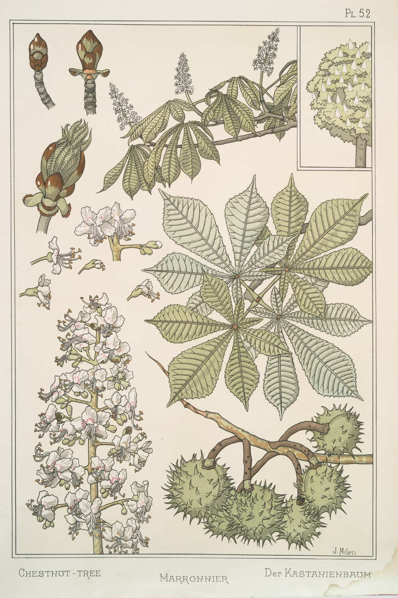
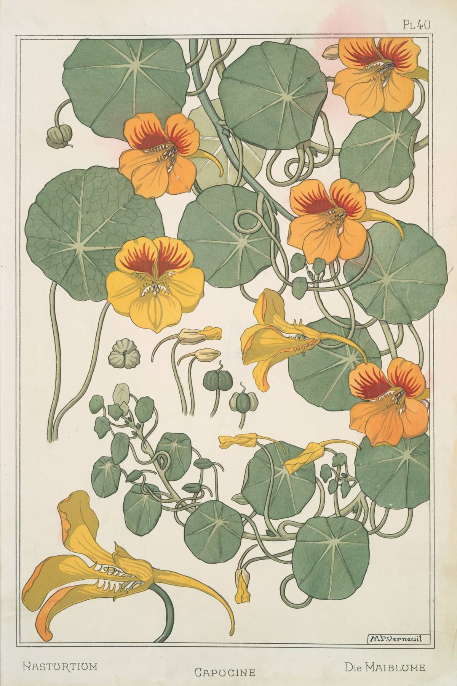
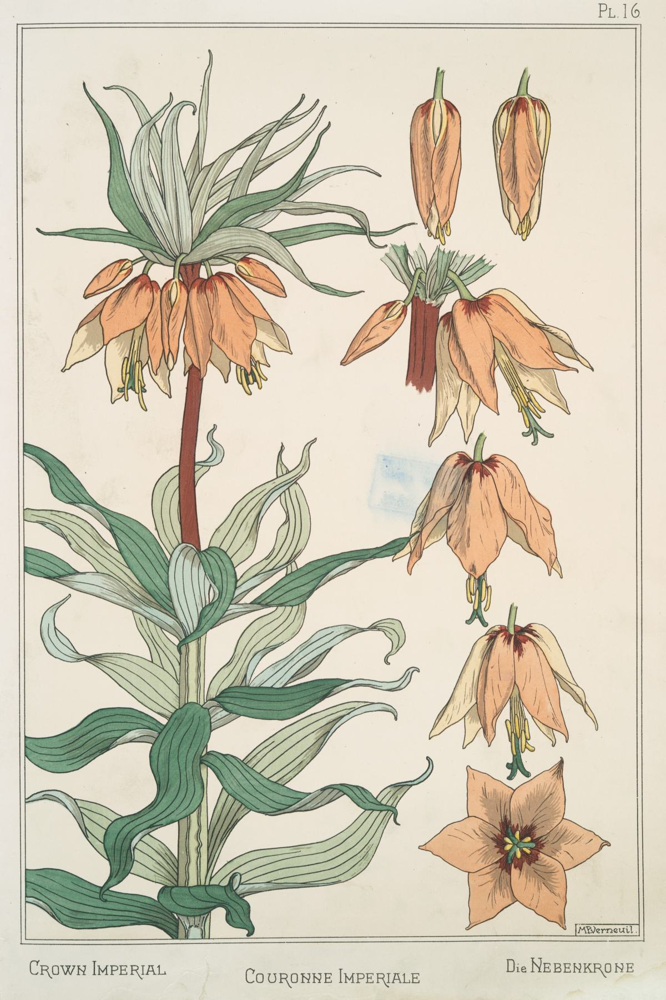
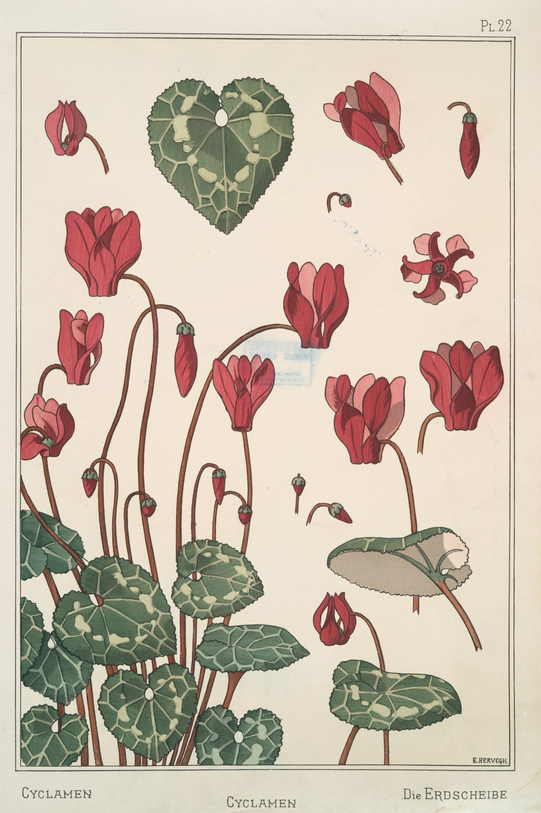
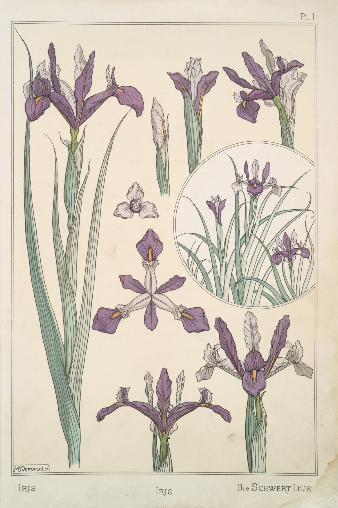

Inspiration / French Art Nouveau Flower Illustrations, 1890s
French Art Nouveau Flower Illustrations, 1890s
In this stunning set of French Art Nouveau illustrations of flowers, we see
plants, trees, and blooms, adapted and reworked into ornamental patterns. The book, titled La Plante et ses Applications Ornementales, includes
illustrations drawn by the students of Eugène Grasset, a Swiss designer known for pioneering Art Nouveau design.
The complete book
is structured so each plant has three plates, moving from a realistic depiction of the subject to their
ornamental patterns.
In the introduction, Grasset encourages readers not to copy the masters, but to look to botanical
inspiration to create something new. "We cannot, as our ancient predecessors could,
lean on the inventions of our immediate fathers," he writes in French. Our art must be guided by necessity
and "an ornamentation borrowed from nature," and, most of all, by the "ceaseless war on the imitation
of the past."
The resulting collection is a stunning set of flower illustrations and their adaptations to geometric and ornamental design.
Source: The Miriam and Ira D. Wallach Division of Art, Prints and Photographs: Art & Architecture Collection,
The New York Public Library. La plante et ses applications ornementales, 1896. Permalink
-

Chestnut tree, 1896. French Art Nouveau. New York Public Library. -

Nasturtium, 1896. French Art Nouveau. New York Public Library. -

Couronne, 1896. French Art Nouveau. New York Public Library. -

Cyclamen (Alpine Violet), 1896. French Art Nouveau. New York Public Library. -

Iris, 1896. French Art Nouveau. New York Public Library.